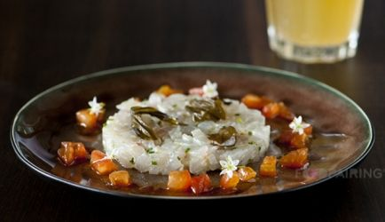

VoorgerechtHoofdgerechtNagerecht
TartaarZeebaarsTomatenvinaigrette
Makkelijk en snel voorgerecht dat bijzonder lekker is.
ingrediënten
- 600 gram zeebaars filet zonder vel olijfolie, extra vierge
- 1 limoen
- mespunt bieslook, fijngesneden algen, gemarineerd (kant-en-klaar in de supermarkt)
- vinaigrettea:
- 5 gram sojasaus
- 20 gram olijfolie, extra vierge
bereidingswijze
- Snijd de zeebaars in blokjes.
- Meng met een scheut olijfolie.
- Meng er wat versgeraspte schil van limoen, limoensap en de bieslook onder.
- Breng op smaak.
- Verdeel over de borden.
- Werk af met de gemarineerde algen.
- Meng alle ingrediënten voor de vinaigrette en breng op smaak en lepel de vinaigrette rond de tartaar.

Tip Lekker met meegranenstokbrood. Voor een minder zout gehaktbrood kun je de bacon weglaten.